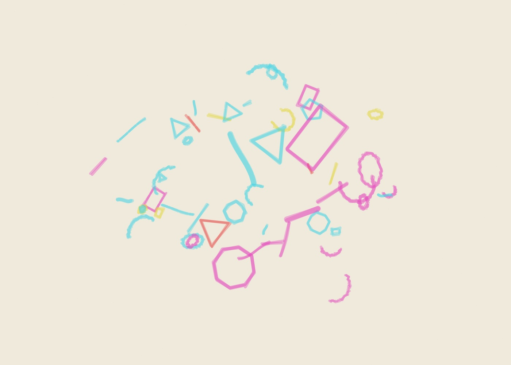

01
Orbital Studies — Study 01
Orbital Studies generative marker artwork using seed AA-20261006-01-37140, 96% golden-ratio adherence, dry pen and the cmyk palette.
- Seed
- AA-20261006-01-37140
- Series
- Orbital Studies
- φ adherence
- 96%
- Pen
- dry
- Palette
- cmyk